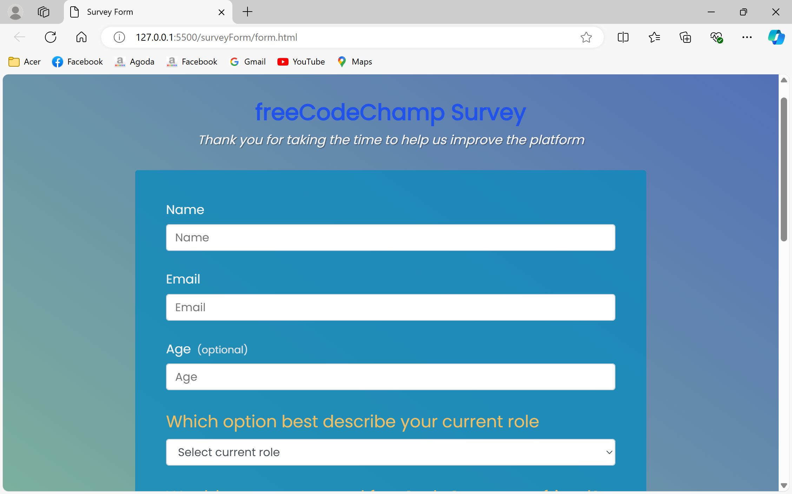
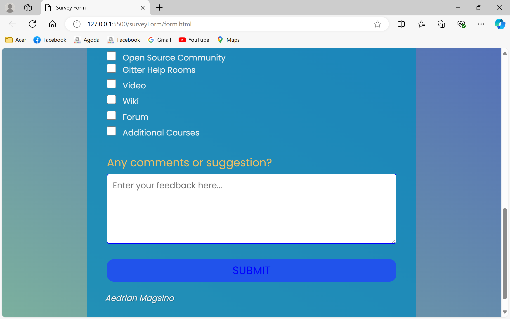
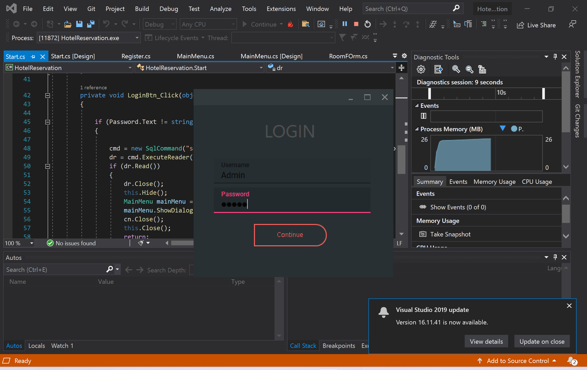
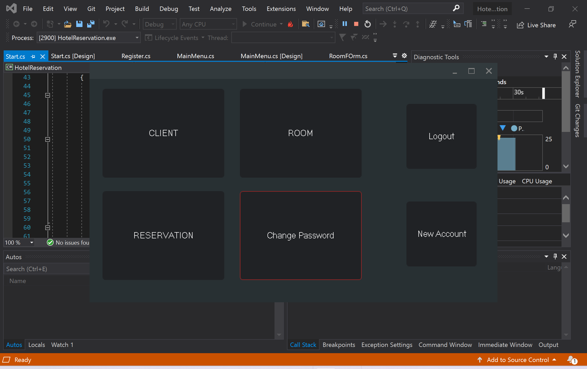

PORTFOLIO






Download Sample Projects
SERVICES
Website Design
My website design skills focus on creating user-centered, visually appealing, and responsive websites that deliver seamless user experiences. I specialize in front-end development using HTML, CSS, and JavaScript to build clean and efficient interfaces.
UX/UI Design
I specialize in creating intuitive and visually appealing user interfaces (UI) that enhance user experience (UX). My approach to design focuses on understanding user behavior and crafting interfaces that are easy to navigate, visually balanced, and optimized for both functionality and aesthetics.
Database Management
I have expertise in database management, ensuring efficient storage, retrieval, and manipulation of data across various systems. My experience includes working with both relational databases like MySQL and PostgreSQL, as well as NoSQL solutions such as MongoDB.